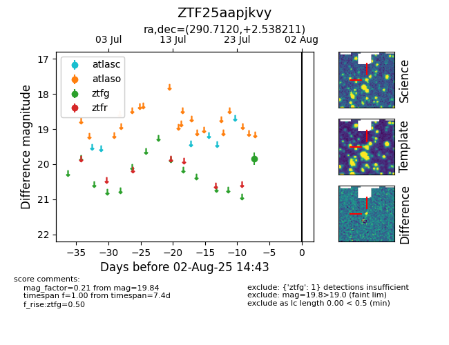

Target ZTF25aapjkvy at 2025-08-02 14:43, see:
FINK: fink-portal.org/ZTF25aapjkvy
Lasair: lasair-ztf.lsst.ac.uk/objects/ZTF25aapjkvy
ALeRCE: alerce.online/object/ZTF25aapjkvy
alt names
ZTF25aapjkvy (ztf,fink)
coordinates:
equatorial (ra, dec) = (290.7120,+2.53821)
galactic (l, b) = (38.7964,-5.81290)
photometry
last ztfg=19.84
1 ztfg detections
